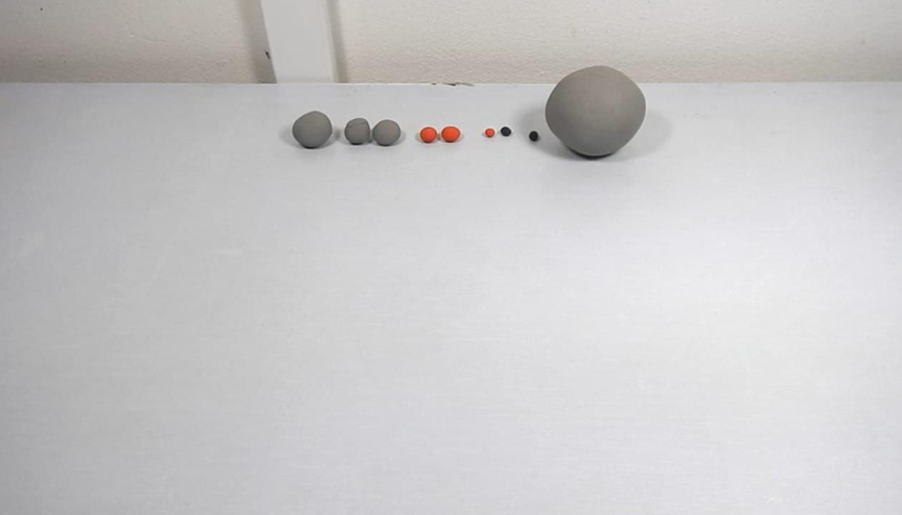
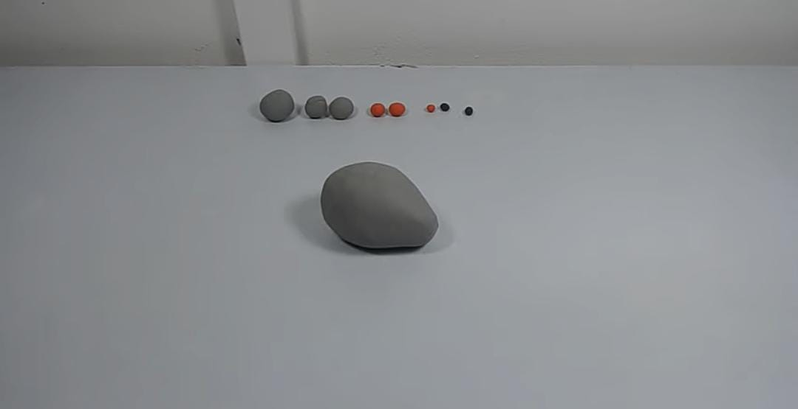
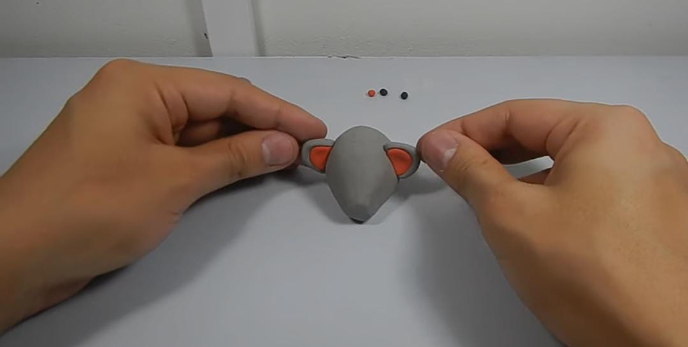
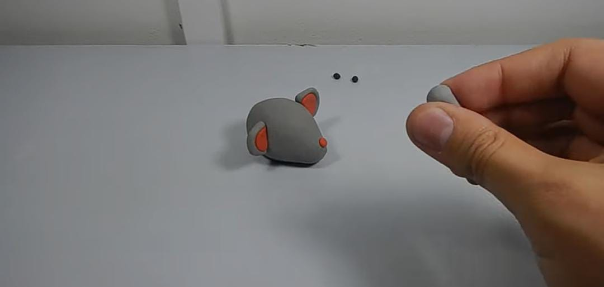
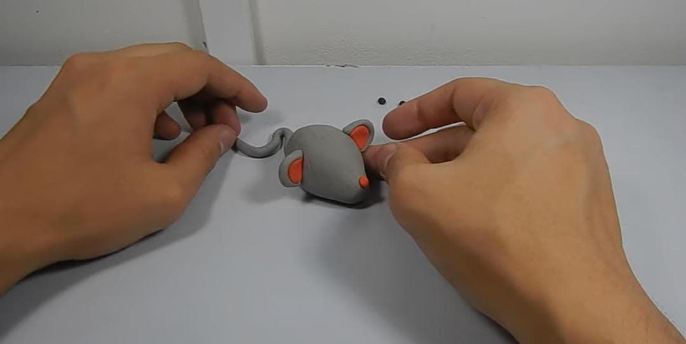
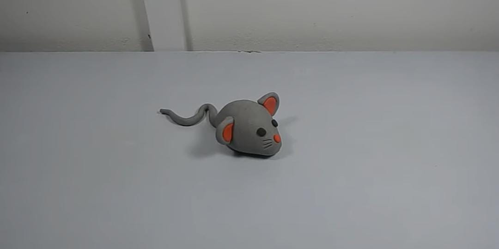

Vamos a empezar
Paso 1 hacer una bola grande con plastilina gris, una mediana, dos un poco mas
chicas;Dosbolitas chicas color naranja y una mas chiquita.Dos bolitas chicas negra

Paso 2 Empezaremos con la bola grande tomar una de las mitades y hacerla como si fuera un cono,
aplastarla un poco que quede un poco plano.

Paso 3 Tomaremos la bolita mediana y la empezaremos a hacer como la mitad de un óvalo,tomaremos la
bolita color naranja y la colocaremos encima de la gris, esto sera para sus orejitas.

Paso 4 Tomaremos la bolita roja chica y la colocaremos en la punta del cono como su nariz.

Paso 5 Para hacer la cola tomaremos la bolita gris y la empezaremos a amasar hasta que quede como una colita y la colocaremos en la parte trasera del ratón como si fuera su cola

Paso 6 Tomaremos las dos bolitas negras y la pondremos en la parte de adelante para que sean sus ojos
del ratón, y trazaremos los bigotes del ratón con un objeto puntiagudo.
